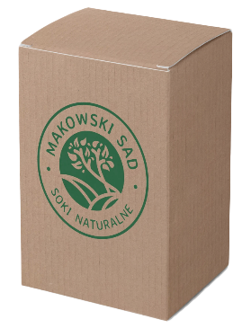
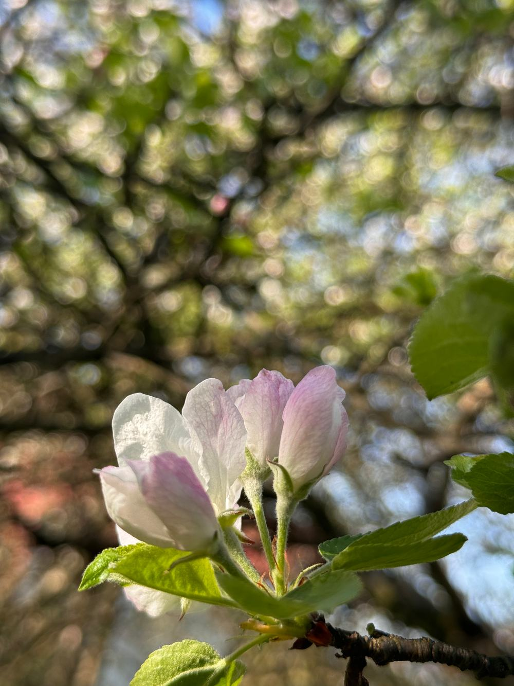

Stadnina koni
Nadmiarowe jabłka zawozimy dla koników pana Andrzeja.

Odkryj wyjątkowe walory tłoczonych soków jabłkowych z ekologicznego sadu w Małopolsce.

Słońce prześwituje przez koronę naszej kwitnącej jabłoni.
Jesteśmy niewielkim, rodzinnym przedsięwzięciem z urokliwego Makowa Podhalańskiego. Zajmujemy się tworzeniem naturalnych soków jabłkowych, z pasją oraz troską o środowisko.
Dom. Z dala od ruchliwych dróg w sadzie znajduje się nasz dom.


Jabłonie. Nasze kilkudziesięcioletnie jabłonie rosną w naturalny sposób bez przyspieszaczy wzrostu i są organicznie odporne.
Mieszkając pośród drzew, nie chcemy obcować ze środkami chemicznymi służącymi do usprawniania uprawy – stosujemy permakulturę.
Jabłonie przycinamy jesienią, usuwamy pasożyty, wszystko ręcznie.


Eko. Nasz sad to mikroekosystem, gdzie każde drzewo i owad ma swoją rolę. Nie chcemy tego zaburzać, stosując „chemię”.
Dbamy o różnorodność sadu, tworząc środowisko, w którym różni goście są mile widziani.


Zbiór. Starannie zbieramy i selekcjonujemy jabłka, tylko najlepsze trafiają do naszych soków.


Transport. Wyselekcjonowane jabłka transportujemy do „Tłoczni Choczni” pod Wadowicami.

Nadmiarowe jabłka zawozimy dla koników pana Andrzeja.
Nasze jabłka też idealnie nadają się do karmienia zwierząt leśnych. Dzikie zwierzątka zostają w lesie i nie wchodzą w szkodę :)
Pozostałe odpady oddajemy do lokalnego Punktu Selektywnej Zbiórki Odpadów Komunalnych.
Soki. „Tłocznia Chocznia” to profesjonalna tłocznia, wyposażona w nowoczesne urządzenia, które zapewniają precyzję, skuteczność procesu tłoczenia i dbałość o środowisko naturalne.
Cały proces jest zoptymalizowany przez tłocznię.

W pudełku lub same worki 3 l.
Soki są dystrybuowane w workach PET z kranikiem.
Opcjonalnie soki są dodatkowo opakowane w prosty karton, umożliwiający łatwe nalewanie oraz zabezpieczający bukłak przed przypadkowym uszkodzeniem.

Eko. Etykiety robimy własnoręcznie, wycinając z kartonów po pizzy lub zużytych pudeł. Przywiązujemy je najprostszym sznurkiem.
Wszystkie napisy i logo są umieszczane poprzez ostemplowanie – w ten sposób nie tworzymy dodatkowych etykiet, nie używamy naklejek. W ten sposób kartony mogą być wielokrotnie używane – wystarczy uzupełniać „wkład”, do czego gorąco zachęcamy.
Etykietki można utylizować jako papier, podobnie jak samo pudełko, jak się już zużyje. Worek PET, po całkowitym opróżnieniu, można wyrzucić do plastików. Zalecamy odciąć wcześniej kranik – umożliwia to wykorzystanie całości soku i ułatwia sortowanie.

Dla Was. Produkujemy rocznie około 300 litrów wysokiej jakości soków jabłkowych.
Chętnie obsługujemy imprezy lokalne.